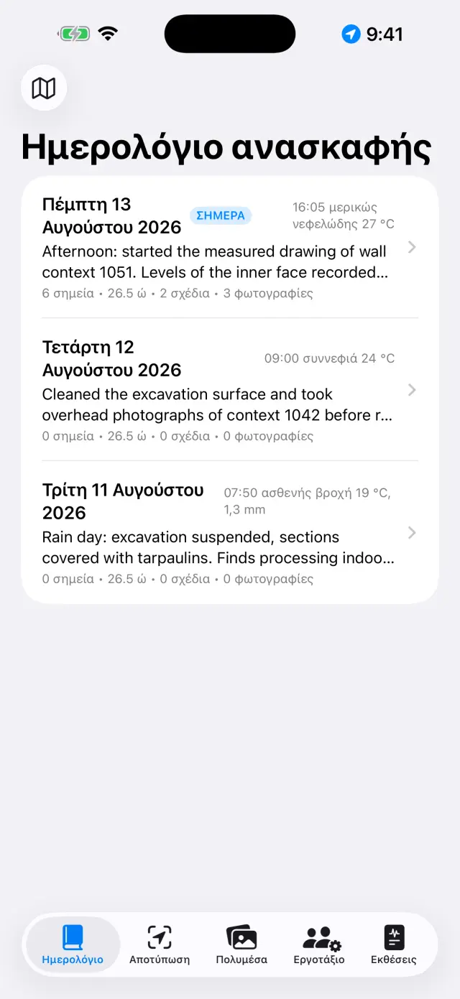
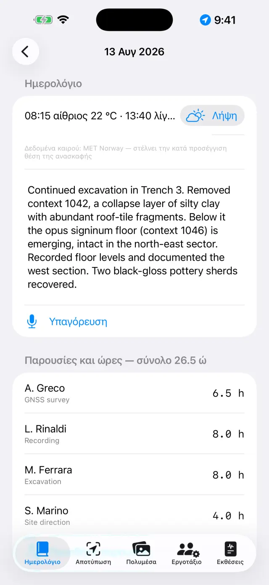
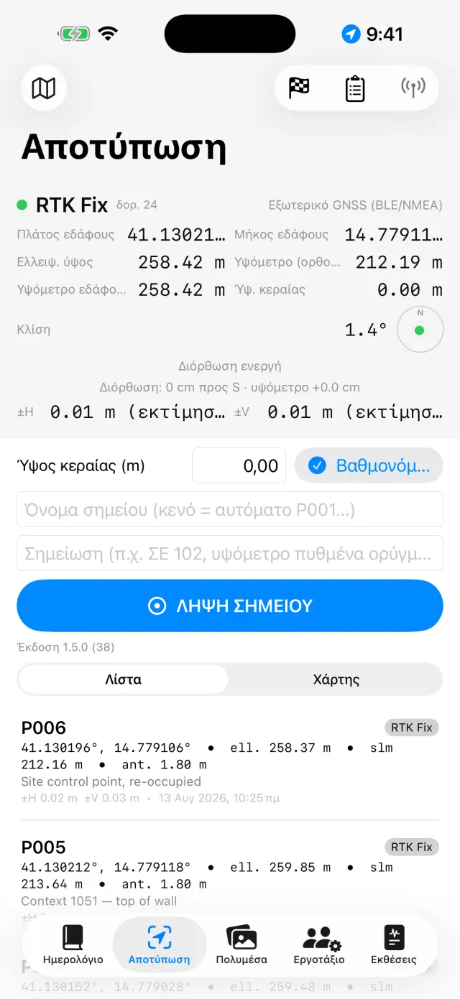
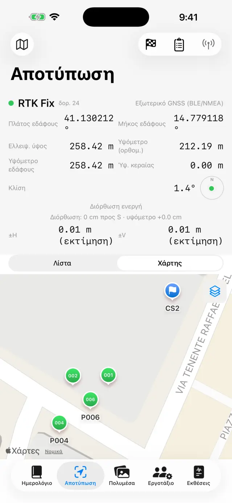
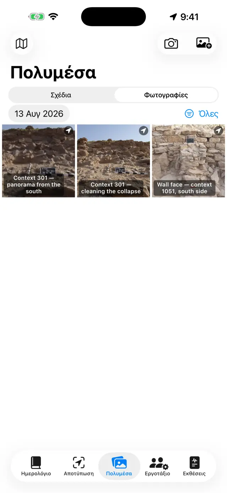
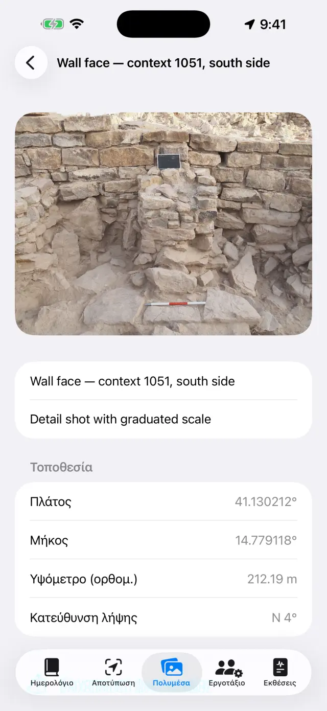
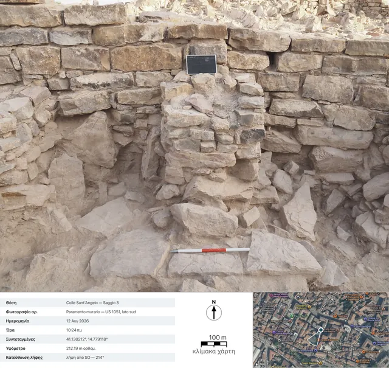
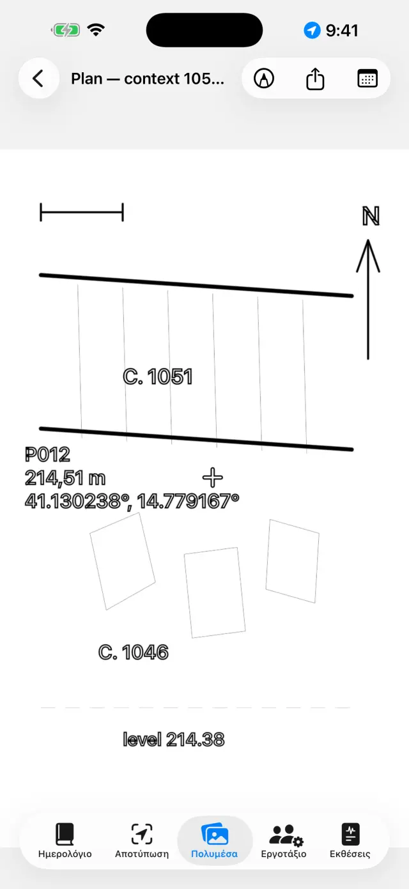
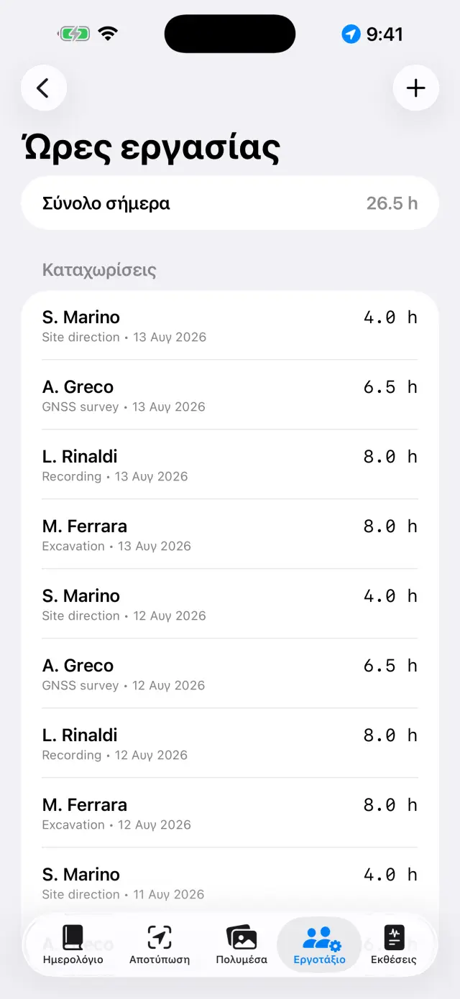
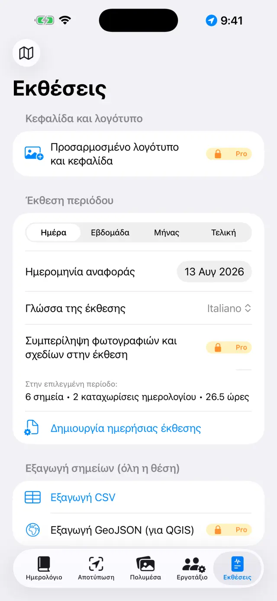

Το ψηφιακό ημερολόγιο ανασκαφής για iPhone και iPad. 100% εκτός σύνδεσης: τα δεδομένα σας μένουν στη συσκευή.
Με δυο λόγια
Μία ιδέα τα διέπει όλα: κάθε ημέρα ανασκαφής είναι μια
σελίδα που συμπληρώνεται μόνη της. Εσείς καταγράφετε τα πράγματα εκεί
που ανήκουν — ένα σημείο GNSS στην Αποτύπωση, μια φωτογραφία στα Πολυμέσα, τις
ώρες στο Εργοτάξιο — και η σελίδα της ημέρας στο Ημερολόγιο τα
συγκεντρώνει όλα αυτόματα. Στο τέλος της εβδομάδας ή της ανασκαφής, οι εκθέσεις
χτίζονται μόνες τους από τις σελίδες.
Μια τυπική ημέρα
ΠρωίΑνοίξτε τη σελίδα της ημέρας, σημειώστε καιρό και ημερολόγιο (και προφορικά με την Υπαγόρευση)
ΠαρουσίεςΣτο Εργοτάξιο καταγράψτε ποιοι είναι εδώ και τις ώρες τους
ΑποτύπωσηΠάρτε σημεία GNSS· ελέγξτε ένα σταθερό σημείο αν δουλεύετε με RTK
ΦωτογραφίεςΤραβήξτε από τα Πολυμέσα: οι συντεταγμένες μπαίνουν μόνες τους
ΣχέδιαΙχνηλατήστε την τομή ή την κάτοψη πάνω σε φωτογραφία (ψηφιακό «ριζόχαρτο»)
ΒράδυΑπό τις Εκθέσεις δημιουργήστε την ημερήσια: PDF έτοιμο για αποστολή
Πρώτα βήματα
Στην πρώτη εκκίνηση θα βρείτε ήδη μια θέση-παράδειγμα. Για να φτιάξετε τη
δική σας, πατήστε το όνομα της θέσης επάνω (εικονίδιο 🗺) →
Νέα θέση… και δώστε της όνομα (π.χ. «Colle Sant'Angelo —
Τομή 3»).
Το όνομα της ενεργής θέσης είναι πάντα ορατό επάνω: όλες οι καρτέλες
δείχνουν τα δεδομένα εκείνης της θέσης. Για να αλλάξετε θέση, πατήστε ξανά το
όνομα: ο κατάλογος βρίσκεται κάτω από τον τίτλο «Οι θέσεις σας», και με τη
Μετονομασία θέσης… διορθώνετε ένα όνομα χωρίς να χάσετε τίποτα.
Δώστε τις άδειες όταν ζητηθούν: τοποθεσία (για τα σημεία),
κάμερα (για τις φωτογραφίες), μικρόφωνο (για την υπαγόρευση),
Bluetooth (μόνο αν χρησιμοποιείτε εξωτερικό δέκτη).
Οι πέντε καρτέλες
📓 Ημερολόγιο
Πατήστε μια ημέρα για να ανοίξει η σελίδα της: ημερολόγιο, καιρός,
παρουσίες, σημεία, φωτογραφίες και σχέδια εκείνης της ημέρας είναι ήδη
εκεί.
Γράψτε το ημερολόγιο ή πατήστε Υπαγόρευση και μιλήστε: η
απομαγνητοφώνηση γίνεται στη συσκευή και δουλεύει και χωρίς δίκτυο.
Ο καιρός γράφεται με το χέρι (π.χ. «Αίθριος, 28 °C, ασθενής άνεμος») ή
λαμβάνεται με τη Λήψη, που ρωτά τη νορβηγική μετεωρολογική υπηρεσία
για τις τρέχουσες συνθήκες. Χρειάζεται δίκτυο και ισχύει μόνο για τη σημερινή
ημέρα: ο χθεσινός καιρός δεν ανακτάται πια. Ένα δεύτερο πάτημα το απόγευμα
προσθέτει άλλη μια μέτρηση. Ό,τι γράφετε με το χέρι υπερισχύει πάντα.
Κατά τη λήψη, από τη συσκευή φεύγει μόνο η θέση της περιοχής
στρογγυλεμένη στα 11 περίπου μέτρα, και στις εκθέσεις η γραμμή βγαίνει στη
γλώσσα της έκθεσης.

Ο κατάλογος των ημερών

Η σελίδα μιας ημέρας
📍 Αποτύπωση
Ο πίνακας επάνω δείχνει τη ζωντανή θέση: συντεταγμένες, υψόμετρα, ακρίβεια
και τύπο λύσης (GPS / RTK Float / RTK Fix).
Αν χρησιμοποιείτε ράβδο, ορίστε το Ύψος κεραίας (m): το υψόμετρο
του σημείου ανάγεται αυτόματα στο έδαφος.
Πατήστε ΛΗΨΗ ΣΗΜΕΙΟΥ. Το όνομα δίνεται με σειρά (P001, P002…),
αλλά μπορείτε να γράψετε δικό σας (π.χ. «ΣΕ 102 — υψόμετρο πυθμένα») και να
προσθέσετε σημείωση.
Εναλλάξτε ανάμεσα σε Λίστα και Χάρτης για να δείτε τα
σημεία στη θέση τους· από τον χάρτη μπορείτε να ενεργοποιήσετε το κτηματολόγιο
ή άλλη υπηρεσία WMS.
Τα σταθερά σημεία (🏁) ζουν στη δική τους ενότητα: εισαγάγετέ τα από CSV ή
δημιουργήστε τα, και μετά ανοίξτε τον Έλεγχος σε πραγματικό χρόνο και
ελέγξτε τις αποκλίσεις ΔΒορράς/ΔΑνατολή/ΔΥψόμετρο με τη μύτη της ράβδου πάνω
στον ήλο, πριν αρχίσετε την αποτύπωση.
Κάτω από τα Βιβλία χωροστάθμησης βρίσκεται το βιβλίο υπαίθρου για
τον οπτικό χωροβάτη: στάσεις, όπισθεν και έμπροσθεν αναγνώσεις, υψόμετρα
υπολογισμένα από ένα σταθερό σημείο αφετηρίας, με έλεγχο κλεισίματος. Τα
χωροσταθμημένα σημεία μπαίνουν στη θέση με το υψόμετρό τους, όπως και τα
GNSS.
Κάτω από τον πίνακα βρίσκονται οι Καταγραφές NMEA: η ακατέργαστη
ροή του εξωτερικού δέκτη PRO καταλήγει σε αρχείο από
μόνη της — η καταγραφή ξεκινά όταν ανάβετε την κεραία και κλείνει όταν τη
σβήνετε, χωρίς να χρειάζεται να το θυμάστε. Χρησιμεύει για να ξαναδιαβάσετε μια
αμφίβολη ημέρα ή για να παραδώσετε το ακατέργαστο σε όποιον κάνει
μετα-επεξεργασία. Τα αρχεία κοινοποιούνται και διαγράφονται, εκτός από εκείνο
της καταγραφής που τρέχει· ο κατάλογος ανοίγει και με τον δέκτη σβηστό, ώστε τα
χθεσινά αρχεία να παραμένουν προσβάσιμα.

Ο πίνακας GNSS της Αποτύπωσης

Σημεία και σταθερά σημεία στον χάρτη
Κάθε σημείο αποθηκεύει και τα δύο υψόμετρα: το
ελλειψοειδές και το ορθομετρικό (πάνω από τη στάθμη της θάλασσας). Με το
εσωτερικό GPS του τηλεφώνου το ορθομετρικό υψόμετρο μπορεί να μην είναι
διαθέσιμο: χρειάζεται εξωτερικός δέκτης (δείτε παρακάτω).
📷 Πολυμέσα
Τραβήξτε με το κουμπί της κάμερας ή εισαγάγετε από τη βιβλιοθήκη.
Οι φωτογραφίες παίρνουν όνομα με σειρά (F001, F002…) και γεωαναφέρονται με
την τελευταία διαθέσιμη θέση GNSS.
Στη λήψη η εφαρμογή καταγράφει και την κατεύθυνση λήψης
από την πυξίδα: στις λεπτομέρειες της φωτογραφίας και στις εκθέσεις διαβάζετε
«λήψη από SO — 214°», ενώ για τις κατακόρυφες λήψεις (κάτοψη, πυθμένας μιας ΣΕ)
τη μνεία της κατακόρυφης λήψης με την κατεύθυνση της πάνω ακμής. Αν η πυξίδα
δέχεται παρεμβολές, η εφαρμογή το λέει.
Πατήστε μια φωτογραφία για τίτλο και σημειώσεις (π.χ. «ΣΕ 102 από
βορρά»).
Η Κοινοποίηση δελτίουPRO δημιουργεί το
φωτογραφικό δελτίο τεκμηρίωσης: τη φωτογραφία με τα δεδομένα
της λήψης από κάτω (θέση, αριθμός, ημερομηνία και ώρα, συντεταγμένες, υψόμετρο,
κατεύθυνση), μια δορυφορική άποψη με την πινέζα και τον κώνο λήψης, τη γραμμή
κλίμακας του χάρτη και το βέλος του βορρά. Ο χάρτης θέλει δίκτυο: χωρίς αυτό,
το δελτίο βγαίνει έτσι κι αλλιώς, με διευρυμένο τον πίνακα δεδομένων.

Η συλλογή φωτογραφιών

Οι λεπτομέρειες μιας φωτογραφίας: συντεταγμένες, υψόμετρο και κατεύθυνση λήψης

Το εξαγόμενο δελτίο: τα δεδομένα της λήψης, η δορυφορική άποψη με τον κώνο λήψης, η γραμμή κλίμακας του χάρτη και το βέλος του βορρά
✏️ Σχέδια (στα Πολυμέσα)
Δημιουργήστε νέο φύλλο και διαλέξτε μια φωτογραφία της θέσης για φόντο:
αυτό είναι το ψηφιακό σας «ριζόχαρτο». Ένα σχέδιο μπορεί να συνεχιστεί σε
πολλές ημέρες. Μπορείτε και να μην τη βάλετε τη φωτογραφία: πάνω στο λευκό
ριζόχαρτο σχεδιάζετε το ίδιο.
Ιχνηλατήστε στρώσεις, τομές και λίθους με το δάχτυλο ή με το Apple Pencil.
Τσιμπήστε για μεγέθυνση (έως 6×, διπλό πάτημα με δύο δάχτυλα
για επιστροφή στο 1×). Αν η φωτογραφία σας κρύβει τη γραμμή, από το μενού της
κάμερας διαλέξτε Αδιαφάνεια φόντου… και φέρτε την όπου χρειάζεται,
από 5% έως 100%: ξεθωριάζει η φωτογραφία, όχι το σχέδιο. Η επιλογή μένει στο
φύλλο και ισχύει και σε PDF, DOCX, PNG και στην Εξαγωγή με
υπόμνημα.
Όλα τα υπόλοιπα βρίσκονται κάτω από τα Εργαλεία (το γαλλικό
κλειδί στη μπάρα), που είναι το ευρετήριο των έξι λειτουργιών: Πλαίσιο
κειμένου, ΙχνηλάτησηPRO,
Κλίμακα της φωτογραφίας, Σημείο με υψόμετρο,
Διαγράμμιση και Στυλ γραμμής. Κρατιέται μία
μόνο κάθε φορά: το τσεκάρισμα λέει ποια, και όσο είναι αναμμένη το
δάχτυλο δεν σχεδιάζει αλλά χειρίζεται εκείνο το εργαλείο — για να επιστρέψετε
στο σχέδιο πατήστε ξανά την τσεκαρισμένη επιλογή. Οι τρεις επιλογές που δουλεύουν
πάνω στην εικόνα (ιχνηλάτηση, κλίμακα, σημείο με υψόμετρο) εμφανίζονται μόνο αν
υπάρχει φωτογραφία φόντου.
Με το Πλαίσιο κειμένου βάζετε τις ετικέτες (π.χ. «ΣΕ 1002»):
μετακινούνται, αλλάζουν μέγεθος με τσίμπημα και έχουν τέσσερις γραμματοσειρές
να διαλέξετε.
Η ΙχνηλάτησηPRO αναγνωρίζει το
περίγραμμα του αντικειμένου που αγγίζετε (έναν λίθο, το όριο μιας στρώσης) και
το μετατρέπει σε γραμμή: χρώμα, πάχος και στυλ της γραμμής αλλάζουν χωρίς να
βγείτε από τη λειτουργία, και τα περιγράμματα βγαίνουν λεία αντί για
σκαλοπάτια. Όλα γίνονται στη συσκευή, χωρίς δίκτυο.
Μέσα στην ιχνηλάτηση, η Ιχνηλάτηση όλωνPRO κάνει τον γύρο μόνη της σε όλη τη φωτογραφία. Στο
φύλλο εκκίνησης αποφασίζετε την εμφάνιση — Μόνο περιγράμματα, ή μια
διαγράμμιση και ίσως ένα Χρωματικό πέπλο — και πατάτε
Έναρξη: η μπάρα λέει σε ποιο σημείο βρίσκεται, και χρειάζονται
μερικές δεκάδες δευτερόλεπτα. Αυτό που εμφανίζεται είναι μια
προεπισκόπηση, όχι το σχέδιο: ένα άγγιγμα μέσα σε ένα σχήμα το
αποκλείει, ένα άλλο το ξαναπαίρνει (ανάμεσα σε αλληλεπικαλυπτόμενα σχήματα
κερδίζει το μικρότερο κάτω από το δάχτυλο), το Λεπτό πέρασμα
ξαναπερνά μόνο εκεί όπου δεν είχε βρει τίποτα, και η Εφαρμογή βάζει
στο σχέδιο ό,τι απέμεινε. Όσο δεν εφαρμόζετε, το φύλλο δεν αγγίζεται.
Με το εργαλείο Κλίμακα της φωτογραφίας (χάρακας) αγγίζετε τα δύο
άκρα μιας γνωστής μέτρησης — ένα τμήμα της βαθμονομημένης ράβδου — και γράφετε
την πραγματική απόσταση: η φωτογραφία αποκτά κλίμακα, και από εκεί και πέρα οι
εξαγωγές μιλούν σε μέτρα.
Με το Σημείο με υψόμετρο βάζετε πάνω στη φωτογραφία τον σταυρό
ενός σημείου GNSS της θέσης (ή ενός σημείου γραμμένου με το χέρι): όνομα,
υψόμετρο και συντεταγμένες εμφανίζονται σε συρόμενη ετικέτα με γραμμή
παραπομπής. Τσιμπήστε πάνω στην επιλεγμένη ετικέτα για να τη μικρύνετε ή να τη
μεγαλώσετε, όταν οι τιμές καλύπτουν το σχέδιο.
Η Διαγράμμιση γεμίζει τα σχήματα: αγγίζετε μέσα
σε ένα κλειστό σχήμα και εκείνο γεμίζει. Υπάρχουν οι δέκα συμβατικές
διαγραμμίσεις — Τοιχοποιία / λίθος, Πλίνθοι,
Κονίαμα / επίχρισμα, Άργιλος, Ιλύς,
Άμμος, Χαλίκι, Άνθρακας / τέφρα,
Φυσικός βράχος, Ξύλο — και το Χρωματικό πέπλο
(ένα χρώμα με τη δική του αδιαφάνεια), μόνα τους ή μαζί. Αν ένα σχήμα βρίσκεται
μέσα σε άλλο κερδίζει το μικρότερο κάτω από το δάχτυλο· η Αφαίρεση
γεμίσματος το καθαρίζει. Δεν χρειάζεται φωτογραφία: το γέμισμα δουλεύει
πάνω στα σχεδιασμένα σχήματα, άρα λειτουργεί και στο λευκό ριζόχαρτο.
Το Στυλ γραμμής ντύνει μια ήδη σχεδιασμένη
γραμμή: την αγγίζετε και διαλέγετε ανάμεσα σε Συνεχής,
Διακεκομμένη, Διάστικτη και Γραμμή-τελεία,
ρυθμίζοντας το πάχος. Η Σχεδίαση με αυτό το στυλ κάνει τις επόμενες
γραμμές να γεννιούνται ήδη ντυμένες· η Αφαίρεση στυλ επαναφέρει τη
γεμάτη γραμμή. Δεν είναι εφέ της οθόνης: οι παύλες είναι πραγματικά τμήματα, και
παραμένουν τέτοια σε PDF, DOCX, PNG, SVG και DXF.
Εξαγωγή με υπόμνημαPRO: η εικόνα
βγαίνει με μια λευκή ζώνη από κάτω — μετρική γραμμή κλίμακας (αν υπάρχει
κλίμακα), βέλος του βορρά για τις κατακόρυφες λήψεις, «λήψη από» για τις
μετωπικές.
Διανυσματική εξαγωγήPRO: SVG για το
σχέδιο, ή DXF για το GIS. Με τουλάχιστον δύο σημεία με
υψόμετρο και συντεταγμένες πάνω σε κατακόρυφη λήψη, το DXF βγαίνει
γεωαναφερμένο σε UTM και στο QGIS τοποθετείται μόνο του στον
κόσμο· μόνο με την κλίμακα βγαίνει σε τοπικά μέτρα· χωρίς ούτε το ένα ούτε τα
άλλα η εφαρμογή το λέει και δεν παράγει αρχείο χωρίς μονάδες. Το SVG αποτελεί
εξαίρεση ως προς την αδιαφάνεια: ενσωματώνει την πρωτότυπη φωτογραφία ως έχει,
οπότε το εξασθενημένο φόντο εκεί βγαίνει σε πλήρη ισχύ.
Όταν τελειώσετε, κρύψτε τη φωτογραφία: μένει το καθαρό σχέδιο, έτοιμο για
την έκθεση.

Το ψηφιακό ριζόχαρτο
👷 Εργοτάξιο
Καταγράψτε τις παρουσίες της ημέρας: όνομα, ειδικότητα και ώρες του
καθενός.
Κρατήστε το ευρετήριο του εξοπλισμού και σε ποιον έχει ανατεθεί.

Παρουσίες και ώρες
📄 Εκθέσεις
Διαλέξτε τον τύπο: ημερήσια (δωρεάν, με υδατογράφημα),
εβδομαδιαία, μηνιαία ή τελική
με πλήρη παραρτήματα PRO.
Διαλέξτε τη γλώσσα της έκθεσης ανάμεσα σε δεκαεπτά,
ανεξάρτητη από τη γλώσσα της εφαρμογής: η έκθεση μπορεί να βγει στα γερμανικά
ακόμη κι αν χρησιμοποιείτε την εφαρμογή στα ελληνικά.
Δημιουργήστε το PDF, ή εξαγάγετε DOCX με λογότυπο και φωτογραφίες
PRO, CSV των σημείων, GeoJSON για το QGIS
PRO.
Με τις φωτογραφίες στις εκθέσεις ενεργές μπορείτε να επιλέξετε
Φωτογραφικά δελτία αντί για φωτογραφίεςPRO:
κάθε φωτογραφία μπαίνει στο PDF και στο DOCX ως πλήρες δελτίο τεκμηρίωσης με
δεδομένα και χάρτη, στη γλώσσα της έκθεσης.

Δημιουργία των εκθέσεων
Εξωτερικός δέκτης GNSS και NTRIP
Με εξωτερικό δέκτη (κεραία εκατοστομετρικής ακρίβειας) η εφαρμογή φτάνει σε
ακρίβεια RTK. Το εσωτερικό GPS παραμένει πάντα διαθέσιμο ως εφεδρεία.
Ανάψτε τον δέκτη και ενεργοποιήστε το Bluetooth του τηλεφώνου.
Στην Αποτύπωση διαλέξτε την πηγή θέσης: Εξωτερικό GNSS
(BLE/NMEA)PRO και επιλέξτε τον δέκτη σας από τον
κατάλογο. Υποστηρίζονται επίσης οι δέκτες MFi (δωρεάν) και όσοι εκπέμπουν NMEA
στο δίκτυο.
Για τις διορθώσεις RTK ρυθμίστε το NTRIP: διεύθυνση του
caster, θύρα, mountpoint, χρήστης και συνθηματικό (μένουν στην κλειδοθήκη της
συσκευής). Η εφαρμογή στέλνει τη θέση στον caster και λαμβάνει τις
διορθώσεις.
Περιμένετε να περάσει σε RTK Fix: ακρίβεια εκατοστού.
Ελέγξτε σε ένα σταθερό σημείο πριν αρχίσετε.
Εκεί που το τηλέφωνο δεν πιάνει, υπάρχει και ο δρόμος
χωρίς ίντερνετ: μια βάση στημένη σε γνωστό σημείο και ένας
rover ανταλλάσσουν τις διορθώσεις μέσω ραδιοζεύξης LoRa, χωρίς
caster και χωρίς SIM (κιτ RTK DFRobot με γέφυρα ESP32). Για την εφαρμογή δεν
αλλάζει τίποτα — λαμβάνει από τον δέκτη ένα ήδη διορθωμένο NMEA — και η
συναρμολόγηση της γέφυρας τεκμηριώνεται χωριστά, στο δικό της README: αυτός εδώ
παραμένει οδηγός της εφαρμογής, όχι εγχειρίδιο υλικολογισμικού.
Αντίγραφα ασφαλείας και ανταλλαγή
Από το μενού της θέσης πατήστε Εξαγωγή θέσης (.zip): μέσα
βρίσκονται όλα — ημερολόγιο, σημεία, φωτογραφίες, σχέδια, ώρες, σταθερά
σημεία.
Φυλάξτε το ZIP όπου θέλετε (Αρχεία, Drive, e-mail…). Είναι το αντίγραφο
ασφαλείας σας: η εφαρμογή δεν έχει σύννεφο, από επιλογή.
Η Εισαγωγή θέσης (.zip)… ξαναφτιάχνει τη θέση σε άλλη συσκευή,
ακόμη και ανάμεσα σε iPhone και Android.
⚠️ Η Διαγραφή θέσης… σβήνει τη θέση με όλο της το
περιεχόμενο και είναι μη αναστρέψιμη: αν έχετε αμφιβολίες,
εξαγάγετε πρώτα ένα ZIP.
Το Pro είναι μηνιαία ή ετήσια συνδρομή με αυτόματη ανανέωση, ή μια εφάπαξ
ισόβια αγορά. Το διαχειρίζεστε και το ακυρώνετε από τις ρυθμίσεις του Apple ID
σας.
Επίλυση προβλημάτων
Ο δέκτης Bluetooth δεν εμφανίζεται ή δεν συνδέεται
Ελέγξτε με τη σειρά:
ο δέκτης είναι αναμμένος και δεν είναι ήδη συνδεδεμένος σε άλλη εφαρμογή ή
τηλέφωνο·
το Bluetooth του συστήματος είναι ενεργό και η εφαρμογή έχει την άδεια
Bluetooth (Ρυθμίσεις → Giornale di Scavo)·
η πηγή που επιλέξατε στην Αποτύπωση είναι Εξωτερικό GNSS
(BLE/NMEA)·
σβήστε και ανάψτε ξανά τον δέκτη, μετά επαναλάβετε την αναζήτηση.
Δεν φτάνω ποτέ σε RTK Fix
Χρειάζεται ενεργή σύνδεση NTRIP: ελέγξτε caster, mountpoint και
διαπιστευτήρια.
Ελέγξτε την κάλυψη δεδομένων του τηλεφώνου: οι διορθώσεις ταξιδεύουν από το
διαδίκτυο.
Ανοιχτός ουρανός: πυκνά δέντρα και κοντινοί τοίχοι υποβαθμίζουν το σήμα. Με
κακή κάλυψη μπορεί να μείνετε σε RTK Float (δεκατόμετρο).
Διαλέξτε κοντινό mountpoint (< 30–40 km) ή δίκτυο VRS.
Το NTRIP δεν συνδέεται
Επαληθεύστε διεύθυνση και θύρα (συχνά 2101) και ότι το mountpoint υπάρχει:
πολλοί casters δημοσιεύουν τον κατάλογο (sourcetable).
Λάθος χρήστης ή συνθηματικό δίνει σφάλμα 401/403: ξαναελέγξτε τα
διαπιστευτήρια.
Κάποια δίκτυα απαιτούν την αποστολή της θέσης (GGA): η εφαρμογή το κάνει
μόνη της, αλλά ο δέκτης πρέπει να έχει ήδη λύση.
Το ορθομετρικό υψόμετρο είναι κενό ή μηδέν
Το εσωτερικό GPS των τηλεφώνων δίνει μόνο το ελλειψοειδές ύψος. Το
ορθομετρικό υψόμετρο έρχεται από την πρόταση GGA ενός εξωτερικού δέκτη. Χωρίς
δέκτη, τα σημεία αποθηκεύουν ούτως ή άλλως το ελλειψοειδές.
Η υπαγόρευση δεν δουλεύει
Ελέγξτε την άδεια μικροφώνου και αναγνώρισης ομιλίας στις Ρυθμίσεις.
Η απομαγνητοφώνηση γίνεται στη συσκευή: την πρώτη φορά το σύστημα μπορεί να
χρειαστεί να κατεβάσει το μοντέλο της γλώσσας (δίκτυο μία φορά, μετά δουλεύει
εκτός σύνδεσης).
Μιλάτε με σύντομες φράσεις· το κείμενο μπαίνει στο τέλος του
ημερολογίου.
Ο κτηματολογικός χάρτης (WMS) δεν φαίνεται
Η εφαρμογή είναι εκτός σύνδεσης, αλλά τα επίπεδα WMS είναι υπηρεσίες
ιστού: χρειάζονται σύνδεση και υπηρεσία σε λειτουργία. Το ιταλικό κτηματολόγιο
είναι προρυθμισμένο· για άλλες χώρες βάλτε το WMS endpoint της εθνικής
υπηρεσίας (πρέπει να υποστηρίζει EPSG:3857). Μακριά από την κάλυψη δεδομένων,
ο βασικός χάρτης και τα σημεία παραμένουν ορατά.
Οι φωτογραφίες δεν έχουν συντεταγμένες
Η φωτογραφία παίρνει τη θέση από την τελευταία λύση GNSS: ανοίξτε πρώτα την
Αποτύπωση και περιμένετε να κλειδώσει η θέση, μετά τραβήξτε. Αν η άδεια
τοποθεσίας έχει απορριφθεί, οι φωτογραφίες αποθηκεύονται χωρίς
συντεταγμένες.
Στην έκθεση λείπουν φωτογραφίες ή λογότυπο
Οι φωτογραφίες στις εκθέσεις, το λογότυπο και η προσαρμοσμένη κεφαλίδα
ανήκουν στο Pro και ισχύουν για DOCX και PDF. Η δωρεάν ημερήσια έχει
υδατογράφημα και δεν περιλαμβάνει φωτογραφίες.
Διέγραψα μια θέση κατά λάθος
Η διαγραφή είναι οριστική: τα δεδομένα δεν ανακτώνται (δεν υπάρχει σύννεφο).
Αν έχετε ZIP που εξαγάγατε νωρίτερα, εισαγάγετέ το για να επαναφέρετε τη θέση
σε εκείνη την ημερομηνία. Συμβουλή: εξάγετε ένα ZIP στο τέλος της
ημέρας.
Αγόρασα το Pro αλλά εμφανίζεται ακόμη κλειδωμένο
Πατήστε Επαναφορά αγορών στην οθόνη Pro, με το ίδιο Apple ID της
αγοράς. Αν αλλάξατε συσκευή, η επαναφορά ανακτά τη συνδρομή ή την ισόβια
άδεια.
Η «Λήψη» είναι σβηστή, ή λέει «Ο καιρός δεν είναι διαθέσιμος»
αν το κουμπί είναι σβηστό βρίσκεστε στη σελίδα μιας περασμένης ημέρας: ο
καιρός λαμβάνεται μόνο για τη σημερινή·
αν εμφανίζεται «Ο καιρός δεν είναι διαθέσιμος» λείπει το δίκτυο, ή η θέση
δεν έχει ακόμη σημείο GNSS από το οποίο να πάρει τις συντεταγμένες — πάρτε ένα
σημείο και δοκιμάστε ξανά.
Το φωτογραφικό δελτίο βγαίνει χωρίς χάρτη
Η δορυφορική άποψη έρχεται από την Apple και θέλει δίκτυο: η εφαρμογή
περιμένει έως 15 δευτερόλεπτα, μετά παράγει το δελτίο χωρίς χάρτη (τα δεδομένα
δεν περιμένουν το δίκτυο). Σε αργά δίκτυα ανασκαφής μπορεί να χρειαστεί όλη η
αναμονή: δοκιμάστε ξανά με Wi-Fi. Χωρίς γεωσήμανση στη φωτογραφία, χάρτης δεν
υπάρχει εξ ορισμού.
Η «Ιχνηλάτηση όλων» δεν βρίσκει τίποτα, ή βρίσκει πάρα πολλά
ο γύρος δουλεύει πάνω στη φωτογραφία φόντου: χωρίς φωτογραφία η εντολή δεν
υπάρχει, και όσο διαβάζετε «Προετοιμασία της φωτογραφίας…» το μοντέλο δεν είναι
ακόμη έτοιμο — περιμένετε·
αν τα σχήματα είναι λίγα, πατήστε Λεπτό πέρασμα: ξαναπερνά με
πυκνότερο κάνναβο μόνο εκεί όπου ο πρώτος γύρος δεν είχε δει τίποτα, και
προσθέτει όσα βρίσκει χωρίς να ξαναβάλει μέσα όσα είχατε αποκλείσει·
αν είναι πάρα πολλά, μην τα εφαρμόσετε όλα: στην προεπισκόπηση αγγίξτε τα
περιττά σχήματα για να τα αποκλείσετε ένα-ένα, μετά Εφαρμογή. Ό,τι
αποκλείετε δεν καταλήγει στο σχέδιο·
οι επίπεδες φωτογραφίες — λίγη αντίθεση, μεσημεριανό φως, έδαφος ολόιδιου
χρώματος — δίνουν λίγα περιγράμματα εκ των πραγμάτων: εκεί συμφέρει η
ιχνηλάτηση με μονό άγγιγμα, που ξέρει πού κοιτάτε·
αν μένει γεμάτο μικροσκοπικά σχήματα, ξαναδοκιμάστε με Μόνο
περιγράμματα: διαβάζονται καλύτερα, και τη διαγράμμιση μπορείτε πάντα να
την απλώσετε μετά, με το χέρι.
Η γραμμή δεν αφήνει να την ντύσουν
το άγγιγμα ψάχνει την πιο κοντινή γραμμή μέσα σε ακτίνα ενός δακτύλου: αν η
γραμμή είναι λεπτή ή οι γραμμές πυκνές, κάντε ζουμ και αγγίξτε
πιο ακριβώς, ακριβώς πάνω στο μελάνι·
ντύνονται μόνο οι γραμμές. Τα γεμίσματα, τα πλαίσια
κειμένου και οι σταυροί των σημείων με υψόμετρο δεν είναι γραμμές, και κάτω από
το δάχτυλο δεν απαντούν·
αν εμφανιστεί «Αυτή η γραμμή δεν μπορεί να αλλάξει στυλ», ανάμεσα στις
γραμμές που μάζεψε το άγγιγμα υπάρχει μία που γραμμή δεν είναι: η τελίτσα που
άφησε ένα ακίνητο άγγιγμα, ή μια γραμμή που ήρθε χαλασμένη από εισαγόμενο
αρχείο. Σβήστε την τελίτσα και ξαναδοκιμάστε, ή αγγίξτε τη γραμμή σε σημείο
μακριά της. Μια τελίτσα μόνη της δεν ντύνεται καθόλου: δεν γίνεται να φτιάξετε
διακεκομμένη με μία τελεία·
αν ανάμεσα στο άγγιγμα και την Εφαρμογή αναιρέσατε ή σχεδιάσατε
κάτι άλλο, η επιλογή λύνεται μόνη της για να μην ντυθεί λάθος γραμμή: αγγίξτε
ξανά τη γραμμή και δοκιμάστε πάλι.
Η διαγράμμιση δεν εμφανίζεται όταν αγγίζω μέσα στο σχήμα
το σχήμα πρέπει να είναι κλειστό, και κλειστό από
μία μόνο γραμμή: ξεκινήστε και γυρίστε σχεδόν στο ίδιο σημείο
χωρίς να σηκώσετε το δάχτυλο (μερικά χιλιοστά απόκλισης συγχωρούνται). Δύο
γραμμές που ακουμπούν στα άκρα παραμένουν δύο ανοιχτές γραμμές, και το να
γεμίσει ένα φύλλο πέρα από ένα όριο που κανείς δεν σχεδίασε θα ήταν χειρότερο
από το να μη γεμίσει καθόλου·
τα περιγράμματα που παράγει η Ιχνηλάτηση είναι κλειστά εκ
κατασκευής: εκείνα γεμίζουν πάντα·
αν τα σχήματα είναι το ένα μέσα στο άλλο, το άγγιγμα παίρνει το
μικρότερο που το περιέχει — για να γεμίσετε το μεγάλο, αγγίξτε
σε σημείο που να βρίσκεται έξω από τα μικρά·
αγγίξατε μέσα στο σχήμα, όχι στο περίγραμμά του; Ο στόχος είναι η
επιφάνεια, όχι η γραμμή.
Το DXF απορρίπτεται, ή ανοίγει «κοντά στην αρχή των αξόνων» στο GIS
για γεωαναφερμένο DXF χρειάζονται μια φωτογραφία τραβηγμένη
κατακόρυφα με την κάμερα της εφαρμογής και τουλάχιστον δύο σημεία με
υψόμετρο και συντεταγμένες καλά απομακρυσμένα μεταξύ τους πάνω στη
φωτογραφία·
μόνο με την κλίμακα της βαθμονομημένης ράβδου το DXF βγαίνει σε
τοπικά μέτρα: είναι σωστό, αλλά το GIS το δείχνει κοντά στην
αρχή των αξόνων — η εφαρμογή σας το λέει από πριν·
χωρίς κλίμακα ούτε σημεία η εξαγωγή απορρίπτεται: ένα DXF χωρίς μονάδες δεν
θα ήταν με νόημα αναγνώσιμο από κανένα GIS.
Εξασθένησα το φόντο, αλλά το SVG βγαίνει με τη φωτογραφία σε πλήρη ισχύ
Έτσι είναι και έτσι μένει: το SVG κουβαλά μέσα του το πρωτότυπο
αρχείο της φωτογραφίας, όχι ένα ξεθωριασμένο αντίγραφό της, και το να
τη φωτίσουμε θα σήμαινε να την ξανασυμπιέσουμε — δηλαδή να τη χειροτερέψουμε για
όλους όσοι ανοίγουν το SVG για να δουλέψουν πάνω του. Η Αδιαφάνεια
φόντου… ισχύει στον επεξεργαστή, στο PDF, στο DOCX, στο PNG και στην
Εξαγωγή με υπόμνημα. Αν χρειάζεστε το διανυσματικό χωρίς φωτογραφία,
διαλέξτε SVG — μόνο το σχέδιο· αν χρειάζεστε τη φωτογραφία
εξασθενημένη, εξαγάγετε σε PNG ή περάστε από την έκθεση.
Το βέλος του βορρά δεν εμφανίζεται στην εξαγωγή με υπόμνημα
Το βέλος εμφανίζεται μόνο για φωτογραφίες τραβηγμένες κατακόρυφα με
την κάμερα της εφαρμογής, που καταγράφει το αζιμούθιο στη λήψη. Στις
μετωπικές βγαίνει η ένδειξη «λήψη από …» (ένα βέλος βορρά πάνω στο επίπεδο μιας
όψης θα ήταν γεωμετρικό ψέμα)· στις φωτογραφίες που εισάγονται από τη
βιβλιοθήκη δεν υπάρχει καμία από τις δύο, γιατί λείπουν τα δεδομένα της
λήψης.